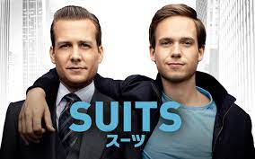
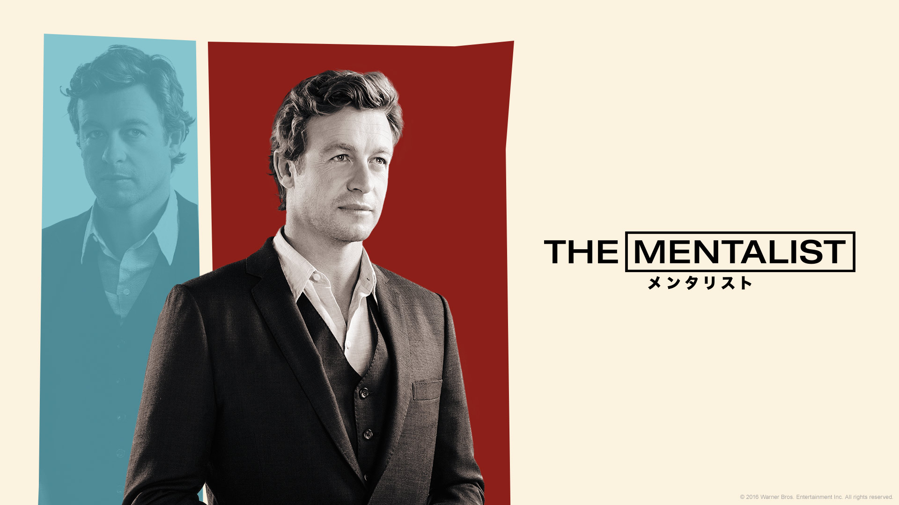
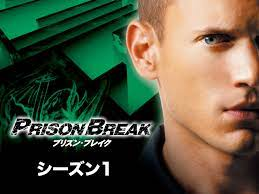

| 順位 | タイトル | 内容 |
|---|---|---|
| １位 |

（Amazonより）
スーツ |
ハーヴィー・スペクターは、マンハッタンの大手法律事務所ピアソン・ハードマンで働く敏腕弁護士。難しい訴訟を解決に導くクローザー[要曖昧さ回避]として一目置かれる存在だが、 部下を持ちたがらず、面倒も一切見ない一匹狼だった。 そんな彼を見るに見かねた所長のジェシカは、シニア・パートナーへの昇進と引き換えに部下のアソシエイトを雇うことを命じ、 仕方なくハーヴィーはアソシエイトの面接を始める。マイク・ロスはたったひとりの肉親である祖母の入院費を稼ぐため、友人の勧めでマリファナの運び屋まがいの仕事を引き受けてい たが、それが警察の罠であることを見抜き、偶然ハーヴィーの面接会場へと逃げこむ。そこでハーヴィーは、マイクが天才的な頭脳を持っていることをすぐに見抜き、アソシエイトへの 採用を決める。しかし、「ピアソン・ハードマン」は、ハーバード大学のロースクール出身者しか採用しないという伝統を持っていた。ハーヴィーはマイクの経歴を詐称することを提案 し、2人は秘密を共有する運命共同体となり、数々の訴訟に挑んでいく（公式サイトより） |
| ２位 |

（Amazonより）
THE MENTALIST/メンタリスト |
カリフォルニア州捜査局（通称・CBI）の犯罪コンサルタント、パトリック・ジェーン。青い瞳と爽やかな笑顔が似合うイケメンだが、元詐欺師で以前は自身を霊能者(サイキック)と偽り 活躍していた。妻と娘を殺した宿敵レッド・ジョンを追うため、CBIのコンサルタントとなり、人間心理を巧みに操る観察眼と推理力を持つ「メンタリスト」として型破りな捜査で犯人を 追う。 レッド・ジョン事件の終了後、CBIコンサルタント時代に捜査の過程で犯した大小さまざまな犯罪を帳消しにする条件として、FBIのコンサルタントとして捜査に参加する。 （Wikipediaより転載） |
| ３位 |

（Amazonより）
プリズン・ブレイク |
副大統領の弟を射殺した容疑で逮捕され、死刑判決を受けたリンカーン・バローズ。主人公マイケル・スコフィールドは兄リンカーンの無実を信じ、刑執行から救い出すために綿密な計画 を備え、自身の体に刑務所の設計図を模したタトゥーをいれる。 銀行強盗を装い、目論見通り実刑が確定したマイケルは、リンカーンが収容され、また自身が改修工事の際に携わった重警備のフォックスリバー刑務所への収監を希望。兄弟での脱獄を企 てる。（Wikipediaより転載） |